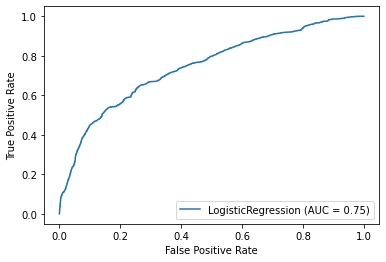
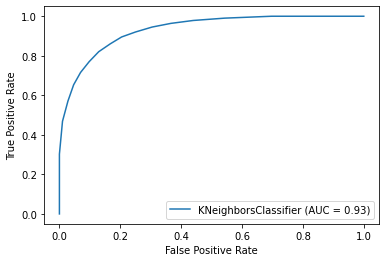
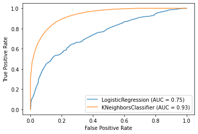

7. Aprendizaje Supervisado¶
### LIMPIEZA DE DATOS
import numpy as np
import pandas as pd
###VISUALIZACION DEL MODELO
import matplotlib.pyplot as plt
from matplotlib.colors import ListedColormap
import matplotlib.patches as mpatches
import seaborn as sb
7.1 Modelos de aprendizaje no supervisado¶
###DIVISION DE LOS DATOS-----------------------------------------------
data= pd.read_csv("seleccion_variables_RF_bathandrooms.csv")
#Etiquetarlos datos en funcion de alto o bajo.
mediana= 870000.0
data["precio_div"]= np.where(data["Price"]>=mediana, "1", "0" )#1 es caro Y 0 es barato
#print(data.head(100))
data=data.replace(np.nan,"0")
print(data.groupby('precio_div').size())
precio_div
0 13381
1 13675
dtype: int64
# Hemos separado el 70%
# dividir el data set de forma aleatoria
p_train = 0.70 # Porcentaje de train.
data['is_train'] = np.random.uniform(0, 1, len(data)) <= p_train
train, test = data[data['is_train']==True], data[data['is_train']==False]
df = data.drop('is_train', 1)
print("Ejemplos usados para entrenar: ", len(train))
print("Ejemplos usados para test: ", len(test))
Ejemplos usados para entrenar: 18878
Ejemplos usados para test: 8178
7.1.1 GLM : Regresion Logística¶
hacer graficas con y sin normalizar??
from sklearn import linear_model
from sklearn import model_selection
from sklearn.metrics import classification_report
from sklearn.metrics import confusion_matrix
from sklearn.metrics import accuracy_score
#TRAIN
features = np.array(train[['Distance','Lattitude','Landsize','Bathroom']])
labels = np.array(train['precio_div'])
#TEST
features_t = np.array(test[['Distance','Lattitude','Landsize','Bathroom']])
labels_t = np.array(test['precio_div'])
# Create logistic regression model
model = linear_model.LogisticRegression()
#Train the model
model.fit(features, labels)#The first is a matrix of features, and the second is a matrix of class labels.
LogisticRegression()
#Validacion del modelo
#predicion of the class
predictions_t= model.predict(features_t)
print(accuracy_score(labels_t, predictions_t))
0.6922230374174615
#Reporte de resultados del Modelo
print(classification_report(labels_t , predictions_t))
precision recall f1-score support
0 0.68 0.72 0.70 4082
1 0.70 0.67 0.69 4096
accuracy 0.69 8178
macro avg 0.69 0.69 0.69 8178
weighted avg 0.69 0.69 0.69 8178
#dibujo de la Curva ROC
from sklearn.metrics import roc_auc_score
from sklearn.datasets import make_multilabel_classification
from sklearn.multioutput import MultiOutputClassifier
from sklearn.metrics import plot_roc_curve
from sklearn.datasets import load_wine
from sklearn.model_selection import train_test_split
rlog_disp = plot_roc_curve(model, features, labels)
plt.show()

7.1.2. K- NEAREST NEIGHBORS (KNN )¶
from sklearn.neighbors import KNeighborsClassifier
from sklearn import metrics
from sklearn.model_selection import train_test_split
from sklearn.neighbors import KNeighborsClassifier
# # SELECCION DE VARIABLES
X = train[['Distance','Lattitude','Landsize','Bathroom']].values
y = train['precio_div'].values
X_test=test[['Distance','Lattitude','Landsize','Bathroom']].values
y_test=test['precio_div'].values
#NORMALIZACION
from sklearn import preprocessing
scaler = preprocessing.StandardScaler().fit(X)
X = scaler.transform(X)
X_test = scaler.transform(X_test)
#encontrar la mejor k
#best_k=0
#best_score=0
#neighbors=range(1,10,2)#considerara min_k=1, max_k=25, solo odd numbers
#for k in neighbors:
#knn=KNeighborsClassifier(n_neighbors=k) #instantiante classifier
#knn.fit(X, y )# fit model
#knn_y_pred= knn.predict(X_test)
#we will consider the optimal k to be the k that produce the highest f1 score
#f1 = metrics.f1_score(y_test, knn_y_pred, pos_label= 0)
#if f1> best_score:
#best_k= k
#best_score =f1
#instantiate the classifier with the optimal k, fir the model and make predictions
#knn= KNeighborsClassifier(n_neighbors=best_k)
#knn.fit(X, y )
#knn_y_pred= knn.predict(X_test)
#ELEGIR EL MEJOR K
k_range = range(1, 20)
scores = []
for k in k_range:
knn = KNeighborsClassifier(n_neighbors = k)
knn.fit(X, y)
scores.append(knn.score(X_test, y_test))
plt.figure()
plt.xlabel('k')
plt.ylabel('accuracy')
plt.scatter(k_range, scores)
plt.xticks([0,5,10,15,20])
([<matplotlib.axis.XTick at 0x7f5facbdeeb0>,
<matplotlib.axis.XTick at 0x7f5facbdee80>,
<matplotlib.axis.XTick at 0x7f5facbdaac0>,
<matplotlib.axis.XTick at 0x7f5facc00bb0>,
<matplotlib.axis.XTick at 0x7f5facb8f100>],
<a list of 5 Text major ticklabel objects>)
#Hiperparametros-
n_neighbors = 3
#algorithm='brute'
#p=1
weights='distance'# uniforme ( todos los puntos son iguales )
#n_jobs=-1
classifier = KNeighborsClassifier(n_neighbors)
# #Train the classifier
classifier.fit(X,y)
print('Accuracy of K-NN classifier on training set: {:.2f}'.format(classifier.score(X, y)))
print('Accuracy of K-NN classifier on test set: {:.2f}'.format(classifier.score(X_test, y_test)))
Accuracy of K-NN classifier on training set: 0.90
Accuracy of K-NN classifier on test set: 0.83
#ENTRENAR EL MODELO
#Hiperparametros-
n_neighbors = 5
#algorithm='brute'
#p=1
weights='distance'# uniforme ( todos los puntos son iguales )
#n_jobs=-1
classifier = KNeighborsClassifier(n_neighbors)
# #Train the classifier
classifier.fit(X,y)
print('Accuracy of K-NN classifier on training set: {:.2f}'.format(classifier.score(X, y)))
print('Accuracy of K-NN classifier on test set: {:.2f}'.format(classifier.score(X_test, y_test)))
Accuracy of K-NN classifier on training set: 0.88
Accuracy of K-NN classifier on test set: 0.84
#PRECISION DEL MODELO
pred = classifier.predict(X_test)
print(confusion_matrix(y_test, pred))
print(classification_report(y_test, pred))
[[3369 713]
[ 587 3509]]
precision recall f1-score support
0 0.85 0.83 0.84 4082
1 0.83 0.86 0.84 4096
accuracy 0.84 8178
macro avg 0.84 0.84 0.84 8178
weighted avg 0.84 0.84 0.84 8178
#ENTRENAR EL MODELO
#Hiperparametros-
n_neighbors = 11
#algorithm='brute'
#p=1
weights='distance'# uniforme ( todos los puntos son iguales )
#n_jobs=-1
classifier = KNeighborsClassifier(n_neighbors)
# #Train the classifier
classifier.fit(X,y)
print('Accuracy of K-NN classifier on training set: {:.2f}'.format(classifier.score(X, y)))
print('Accuracy of K-NN classifier on test set: {:.2f}'.format(classifier.score(X_test, y_test)))
Accuracy of K-NN classifier on training set: 0.86
Accuracy of K-NN classifier on test set: 0.84
#PRECISION DEL MODELO
pred = classifier.predict(X_test)
print(confusion_matrix(y_test, pred))
print(classification_report(y_test, pred))
[[3360 722]
[ 608 3488]]
precision recall f1-score support
0 0.85 0.82 0.83 4082
1 0.83 0.85 0.84 4096
accuracy 0.84 8178
macro avg 0.84 0.84 0.84 8178
weighted avg 0.84 0.84 0.84 8178
#ENTRENAR EL MODELO
#Hiperparametros-
n_neighbors = 15
#algorithm='brute'
#p=1
weights='distance'# uniforme ( todos los puntos son iguales )
#n_jobs=-1
classifier = KNeighborsClassifier(n_neighbors)
# #Train the classifier
classifier.fit(X,y)
print('Accuracy of K-NN classifier on training set: {:.2f}'.format(classifier.score(X, y)))
print('Accuracy of K-NN classifier on test set: {:.2f}'.format(classifier.score(X_test, y_test)))
Accuracy of K-NN classifier on training set: 0.85
Accuracy of K-NN classifier on test set: 0.83
#PRECISION DEL MODELO
pred = classifier.predict(X_test)
print(confusion_matrix(y_test, pred))
print(classification_report(y_test, pred))
[[3327 755]
[ 625 3471]]
precision recall f1-score support
0 0.84 0.82 0.83 4082
1 0.82 0.85 0.83 4096
accuracy 0.83 8178
macro avg 0.83 0.83 0.83 8178
weighted avg 0.83 0.83 0.83 8178
#Pintar curva ROC
Knn_disp = plot_roc_curve(classifier, X, y)
plt.show()

7.1.3. SVM¶
Primero sin normalizar y despues normalizando probar los difrentes kernels
from sklearn.svm import SVC
from sklearn import svm
from sklearn.naive_bayes import GaussianNB
X = train[['Distance','Lattitude','Landsize','Bathroom']].values
y = train['precio_div'].values
X_test=test[['Distance','Lattitude','Landsize','Bathroom']].values
y_test=test['precio_div'].values
Kernel Lineal
#classifier = SVC(kernel = "linear", C = 2)
#classifier.fit(X, y)
#print(classifier.predict(X_test))
#print("Kernel lineal", classifier.score(X_test, Y_test))
Kernel Polinómico
#classifier = SVC(kernel = "poly",degree= 2, C = 2)
#classifier.fit(X, y)
#print(classifier.predict(X_test))
#print("Kernel polinómico", classifier.score(X_test, Y_test))
Kernel RBF
classifier = SVC(kernel = "rbf", gamma = 0.3, C = 2)
classifier.fit(X, y)
#print(classifier.predict(X_test))
print("Kernel rbf", classifier.score(X_test, y_test))
Kernel rbf 0.7298850574712644
Normalizando
#NORMALIZACION
scaler = preprocessing.StandardScaler().fit(X)
X = scaler.transform(X)
X_test = scaler.transform(X_test)
classifier = SVC(kernel = "rbf", gamma = 0.3, C = 2)
classifier.fit(X, y)
#print(classifier.predict(X_test))
print(classifier.score(X_test, y_test))
0.7842993396918562
#from sklearn.model_selection import GridSearchCV
#define the hyperparameters we ant to tune
#param_grid={
#'kernel':['rbf'],
#'C':[0.001,0.01,0.1,1,10],
#'gamma': [0.001,0.01,0.1,1],
#}
#instantiate GridSearchCV fit model, and male prediction
#gs_svc=GridSearchCV(SVC(), param_grid=param_grid)
#gs_svc.fit(X,y)
#y_pred=gs_svc.predict(X_test)
7.2. Evaluacion del punto de corte¶
Para elegir el mejor punto de corte para la categorizacion binaria del precio de las casas en caras y baratas vamos a utilzar la curva ROC.
En el siguiente gráfico, Figura 1, se representa la curva ROC y el punto de corte que maximiza el K-S, que se corresponde con el punto en la curva ROC cuya distancia horizontal al eje es máxima
from sklearn.metrics import roc_auc_score
from sklearn.datasets import make_multilabel_classification
from sklearn.multioutput import MultiOutputClassifier
from sklearn.metrics import plot_roc_curve
from sklearn.datasets import load_wine
from sklearn.model_selection import train_test_split
ax = plt.gca()
rlog_disp.plot(ax=ax, alpha=0.8)
Knn_disp.plot(ax=ax, alpha=0.8)
plt.show()
